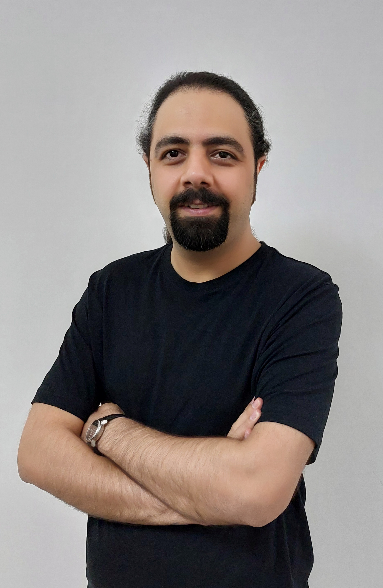

Architekt mit 14 Jahren Berufserfahrung in architektonischer Planung, Ausführungszeichnungen und Bauüberwachung.
Meine Arbeit umfasst Wohnanlagen, Gewerbeprojekte, Villen, öffentliche Räume sowie Innenarchitektur. Während meiner Laufbahn habe ich mich darauf konzentriert, architektonische Konzepte in präzise, technisch fundierte und realisierbare Lösungen umzusetzen.
Für mich geht es in der Architektur nicht nur um Formgestaltung, sondern vor allem um Analyse, Problemlösung und verantwortungsvolle Umsetzung.
Die regelmäßige Teilnahme an Architekturwettbewerben ermöglicht es mir, neue Ideen zu erforschen, kreatives Denken weiterzuentwickeln und bestehende Ansätze kontinuierlich zu hinterfragen.
Ich verfüge über fundierte Kenntnisse in AutoCAD, Revit, 3ds Max, V-Ray und Photoshop für technische Planung, BIM-Prozesse, Visualisierung und professionelle Präsentationen.
Lebenslauf ansehen